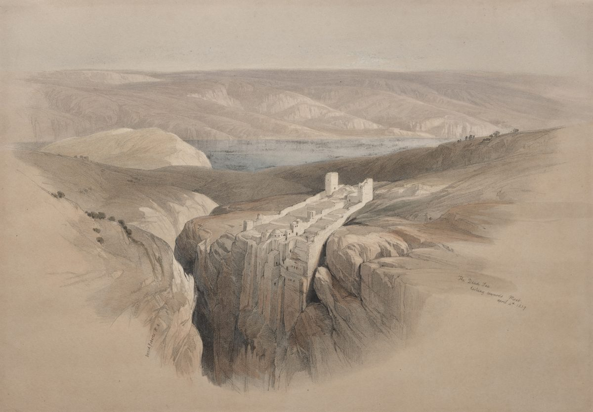

Ezequiel 25 — La Traducción Mister

Los montes del otro lado del agua son el lado que el título llama Moab (versículos 8 a 11). La vista es del siglo XIX; los edificios del primer plano no son de la época de Ezequiel.
Notas del traductor
⭐ Un giro hacia fuera. El capítulo 24 terminó a la espera del fugitivo. Aquí las palabras van a los vecinos de Israel: Amón, Moab, Edom y los filisteos. A cada uno se le acusa con «por cuanto», se le responde con «por tanto», y se dice que alguien sabrá. Amón fue nombrado en 21:25 y 21:33. El capítulo no da fecha.
⭐ Pon tu rostro. Como hacia el sur y hacia Jerusalén (21:2, 21:7).
⭐ Ajá. He’aj, un grito de gusto por la caída de otro. El enemigo vuelve a decirlo en 36:2. Tres cosas se celebran: el santuario profanado (compárese 24:21), el suelo de Israel desolado, y la casa de Judá ida al destierro. La RVR1960 dice «tierra» y la NVI «país»; la TNM 1987, «suelo».
⚠ Quién es «tú». En los versículos 3 y 4 se habla a Amón como a una sola mujer; al final del versículo 5 «sabrán» es plural; en los versículos 6 y 7 el «tú» es un solo varón.
⭐ Hijos del oriente. Las palabras bene qédem están en once versículos de la Biblia hebrea, entre ellos Jueces 6:3, donde suben con Madián y Amalec. La RVR1960 y la TNM 1987 dicen «orientales», la NVI «los pueblos del oriente».
⭐ Posesión. Morashah, la palabra de Éxodo 6:8, donde la tierra se promete a Israel; vuelve en el versículo 10.
⚠ Campamentos. La palabra se usa de los hijos de Ismael en Génesis 25:16. La RVR1960 dice «apriscos», la NVI «campamentos», la TNM 1987 «campamentos amurallados».
⭐ Camellos y rebaños. Rabá, la ciudad principal de Amón, pasa a ser morada de camellos. «Morada» y «recostarse» son palabras impresas del rebaño de Israel en 34:14; aquí se dicen de lo que ocupa el lugar de Amón.
⭐ Mano y pie. En 6:11 se mandó al profeta golpear con la mano y pisar fuerte con el pie, diciendo «¡Ay!». Aquí vuelve el verbo de pisar, el de las palmas es otro, y el ánimo es de alegría.
⭐ Desprecio de alma. La frase impresa en 36:5 de quienes se quedaron con la tierra. Vuelve en el versículo 15, de los filisteos. La RVR1960 dice «con todo tu menosprecio».
⚠ Una forma escrita, otra leída. En el versículo 7 el texto tiene lbg y el margen lee lbz, «como botín» (ketiv/qeré); la traducción sigue lo que se lee. «Botín para las naciones» en estas palabras está en tres versículos de la Biblia hebrea: aquí, 26:5 y 34:28, donde el rebaño de Dios ya no lo será.
⚠ He extendido. La mano se extiende tres veces en este capítulo, en tres formas del verbo: «he extendido» aquí, «extenderé» contra Edom (versículo 13), «estoy extendiendo» contra los filisteos (versículo 16). La TNM 1987 conserva «he extendido» aquí; la RVR1960 y la NVI dicen «extenderé».
⭐ Moab y Seír. Se cita a dos. Seír es la región montañosa de Esaú, que es Edom (Génesis 36:8); Edom tiene su propia palabra desde el versículo 12. Moab y Amón son los dos hijos de las hijas de Lot (Génesis 19:37–38).
⭐ Como todas las naciones. Las palabras están en cuatro versículos de la Biblia hebrea: la ley del rey (Deuteronomio 17:14), los ancianos pidiendo un rey (1 Samuel 8:5 y 20), y aquí. Allí es Israel quien quiere ser como las naciones; aquí otros dicen que Judá ya lo es.
⚠ El hombro. Ketef, «hombro», como en 24:4; de una tierra, un costado o ladera. La RVR1960 dice «el lado de Moab», la NVI «el flanco», la TNM 1987 «el declive».
⭐ La gloria de la tierra. Tsevi, la palabra impresa «la gloria de todas las tierras» de la tierra de Israel en 20:6, se da aquí a los pueblos de Moab: Bet-jesimot (Números 33:49), Baal-meón (Números 32:38) y Quiriataim (Números 32:37). El último tiene una forma escrita y otra leída.
⚠ Versículo 10. La frase sigue desde el versículo 9: el hombro se abre «a los hijos del oriente». Las palabras traducidas «junto con los hijos de Amón» son al bene Ammon, que pueden tomarse también como «contra» ellos: así la RVR1960, «a los hijos del oriente contra los hijos de Amón»; la TNM 1987 dice «junto a los hijos de Ammón». «La daré» tiene un «la» femenino, y el versículo no dice de qué tierra se trata.
⭐ Actos de juicio. Como contra Jerusalén (5:10, 11:9; shephatim).
⭐ Venganza. La raíz se oye una y otra vez desde aquí hasta el final: la tomó Edom, la tomaron los filisteos, y Dios llama «mi venganza» a lo que hará. En Números 31:3 es «la venganza de Jehová». También aquí se pone sobre Edom «por mano de mi pueblo Israel».
⭐ Muy culpables. El verbo va doblado, vayye’shemu ashom. Sus letras vy’shmw son las vistas en 6:6. Edom va en singular al comienzo del versículo y en plural después. El versículo no dice qué se hizo; compárese Abdías (1:10, violencia contra un hermano) y Lamentaciones 4:22.
⭐ Hombres y bestias. Como en 14:13.
⚠ Temán y Dedán. El hebreo tiene una ruina «desde Temán», y luego «y hasta Dedán» caerán. La RVR1960 dice «desde Temán hasta Dedán caerán a espada», y la NVI pone los dos nombres con los que mueren. Temán puede significar también «sur».
⭐ Enemistad antigua. Evat olam. Olam mira muy atrás o muy adelante: la RVR1960 dice «antiguas enemistades», la TNM 1987 «enemistad de duración indefinida». Las mismas dos palabras están en 35:5, del monte Seír.
⭐ Un juego con un nombre. «Cortaré a los cereteos» es hikhratti et keretim: el verbo y el nombre suenan parecido. A los cereteos se les nombra aquí junto a los filisteos, y hay un Néguev suyo en 1 Samuel 30:14; hombres de ese nombre sirven a David (2 Samuel 8:18).
⭐ Grandes venganzas. Neqamot, plural. La forma está en cinco versículos de la Biblia hebrea. «Reprensiones furiosas» es la frase de 5:15, donde va dirigida a Jerusalén; allí el hebreo la escribe con una letra menos.
⭐ El cierre. A Amón se le dice dos veces que sabrá, y de Moab, Edom y los filisteos se dice que sabrán. Solo de Edom se dice que conocerán «mi venganza», donde los otros sabrán «que yo soy Jehová».
Patrones que conviene llevar adelante
Donde esta traducción mantiene las palabras exactas / distintas: «hijos de Amón» en 2, 3, 5 y 10; «posesión» en 4 y 10; «desprecio de alma» en 6 y 15; «extender mi mano» en 7, 13 y 16; y «venganza» en 12, 14, 15 y 17.
Ecos pagados. La espada contra Amón de 21:33; el «Ajá» de 36:2; la mano y el pie de 6:11; las reprensiones furiosas de 5:15.
Ecos plantados. Tiro en 26:2, que también dice «Ajá»; el monte Seír en 35:5.
Siguiente en orden: Ezequiel 26 — contra Tiro.